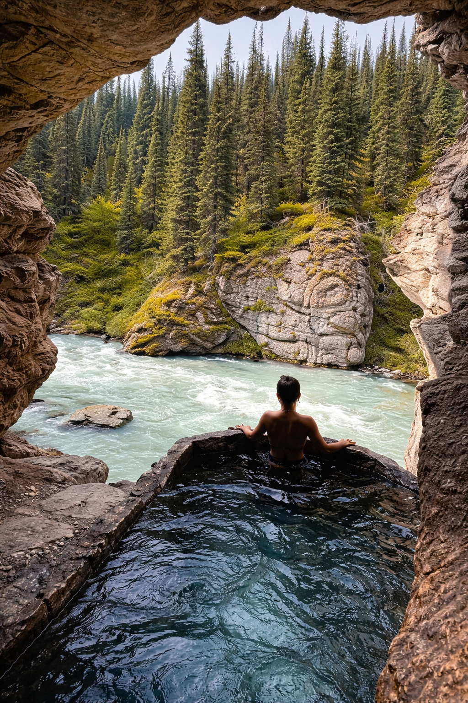
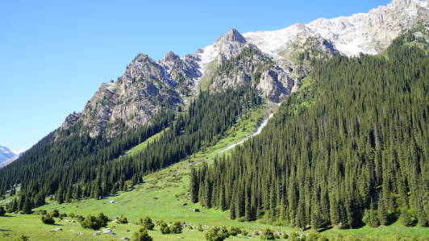
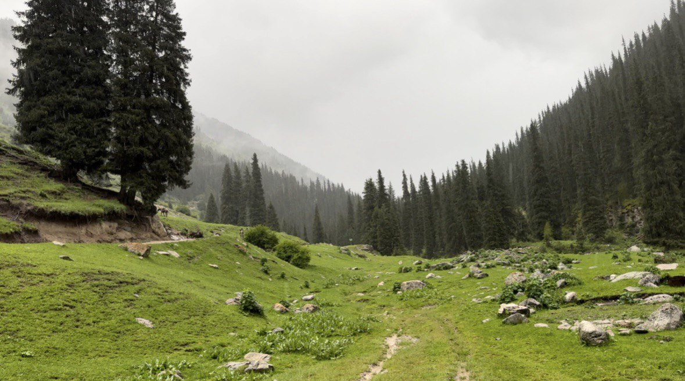
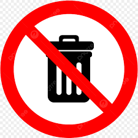

Altyn-Arashan is the classic Kyrgyz “reward location”: a deep alpine valley, cold river air, and natural hot springs that feel unreal after the rough ride up. If you’re staying in Karakol, this is one of the best day trips — and if you can spend a night here, it becomes a whole different experience.

What is Altyn-Arashan?
Altyn-Arashan is an alpine valley near Karakol in the Issyk-Kul region, known for its thermal springs and mountain scenery. In season, you’ll see yurts and simple guesthouses, plus hikers using the valley as a base for routes deeper into the Tian Shan.
It’s not a “tourist city” type place. It’s raw nature: mountain walls, forests, and that calm vibe you only get far from the main road.

Hot Springs Soak
The main ritual: soak in mineral water, breathe cold mountain air, repeat. Bring flip-flops, a towel, and a dry bag for wet clothes.

Valley Walks
Easy walks along the river and meadow areas — perfect for calm travel shots and “nature sound” clips.

Hikes From the Valley
Altyn-Arashan is a gateway for longer hikes and higher viewpoints. If you want the best light (and fewer people), start early.

Overnight Stay
Staying one night gives you quiet mornings, empty springs, and a totally different mood than a rushed day trip.
How to get there from Karakol
Most travelers go by 4x4 from Karakol. The road is rocky and steep, so normal sedans usually struggle. If you’re using a driver, agree on return time before you go — signal can be weak in the valley.
-
 4x4 recommended The road is rough. A reliable driver makes the whole day safer and smoother.
4x4 recommended The road is rough. A reliable driver makes the whole day safer and smoother. -
 Start early for the best day Morning means calmer weather, better light, and more time to soak without rushing.
Start early for the best day Morning means calmer weather, better light, and more time to soak without rushing. -
 Set a clear return plan Confirm pickup/waiting time. Don’t rely on last-minute taxis inside the valley.
Set a clear return plan Confirm pickup/waiting time. Don’t rely on last-minute taxis inside the valley.
Where to get the shot


Quick tips before you go
-
 Bring warm layers Even in summer, the valley can feel cold — especially after the hot springs.
Bring warm layers Even in summer, the valley can feel cold — especially after the hot springs. -
Flip-flops + towel Essentials for the springs. A dry bag helps a lot for wet stuff.
-
 Carry water + snacks The ride is bumpy and the day gets long fast — pack something simple.
Carry water + snacks The ride is bumpy and the day gets long fast — pack something simple. -

Leave no trace Keep the valley clean — Altyn-Arashan stays magical only if everyone respects it.